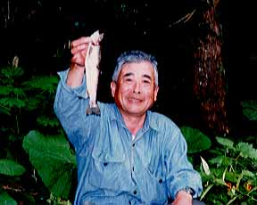
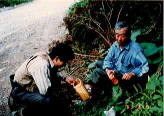

Photo Gallery
A fishing trip to the North-East part of Japan

My father's great technique - "How to fish in such a brushy stream"
In May of 1991, my father, my fishing friend Mr. Okada and I went to the Tohoku district, the northeast part of Japan. But we could not make a good catch. Then we headed to the lake Towada to sightseeing. On the way to the lake, we found out a good river for trout fishing. So we cut short our sightseeing, made preparations to fish so hurry and started fishing. When we had finished fishing, Mr. Okada and I could not catch only one trout. However, my father had caught this "Iwana" in a brushy stream. Such brushy stream was his favourite fishing spot.

Ah! How did you fish in such a heavy bush?
My friend Okada and I were so surprised. We did not have a word.
Photo Gallery Contents
Home